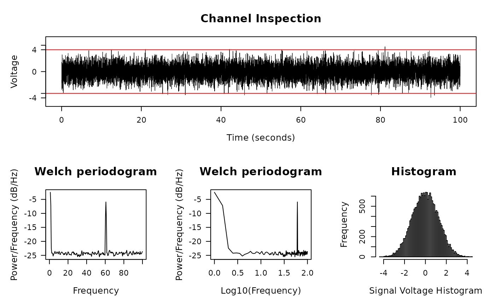

Plot and Inspect Signals in Trace, Periodogram, and Histogram
Source:R/signal-plots.R
diagnose_signal.RdPlot and Inspect Signals in Trace, Periodogram, and Histogram
Usage
diagnose_signal(
s1,
s2 = NULL,
sc = NULL,
srate,
name = "",
try_compress = TRUE,
max_freq = 300,
window = ceiling(srate * 2),
noverlap = window/2,
std = 3,
cex = 1.5,
lwd = 0.5,
flim = NULL,
nclass = 100,
main = "Channel Inspection",
col = c("black", "red"),
which = NULL,
start_time = 0,
boundary = NULL,
mar = c(5.2, 5.1, 4.1, 2.1),
...
)Arguments
- s1
Signal for inspection
- s2
Signal to compare, default NULL
- sc
compressed signal to speedup the trace plot, if not provided, then either the original
s1is used, or a compressed version will be used. See parametertry_compress.- srate
Sample rate of s1, note that
s2ands1must have the same sample rate- name
Analysis name, for e.g. "CAR", "Notch", etc.
- try_compress
If length of
s1is too large, it might take long to draw trace plot, my solution is to down-sample s1 first (like what Matlab does), and then plot the compressed signal. Some information will be lost during this process, however, the trade-off is the speed.try_compress=FALSEindicates that you don't want to compress signals under any situation (this might be slow).- max_freq
Max frequency to plot, should be no larger than half of the sampling rate.
- window
Window length to draw the Periodogram
- noverlap
Number of data points that each adjacent windows overlap
- std
Error bar (red line) be drawn at standard deviations, by default is 3, meaning the error bars represent 3 standard deviations.
- cex, lwd, mar, ...
passed to
plot.default- flim
log10of frequency range to plot- nclass
Number of classes for histogram
- main
Plot title
- col
Color for two signals, length of 2.
- which
Which sub-plot to plot
- start_time
When does signal starts
- boundary
Boundary for signal plot, default is 1 standard deviation
Examples
library(stats)
time <- seq(0, 100, by = 1/200)
s2 <- sin(2 * pi * 60 * time) + rnorm(length(time))
diagnose_signal(s2, srate = 200)

#> $ylim
#> [1] 4.431596
#>
#> $boundary
#> [1] 3.674513
#>
# Apply notch filter
s1 = notch_filter(s2, 200, 58,62)
diagnose_signal(s1, s2, srate = 200)
 #> $ylim
#> [1] 3.755492
#>
#> $boundary
#> [1] 2.98199
#>
#> $ylim
#> [1] 3.755492
#>
#> $boundary
#> [1] 2.98199
#>